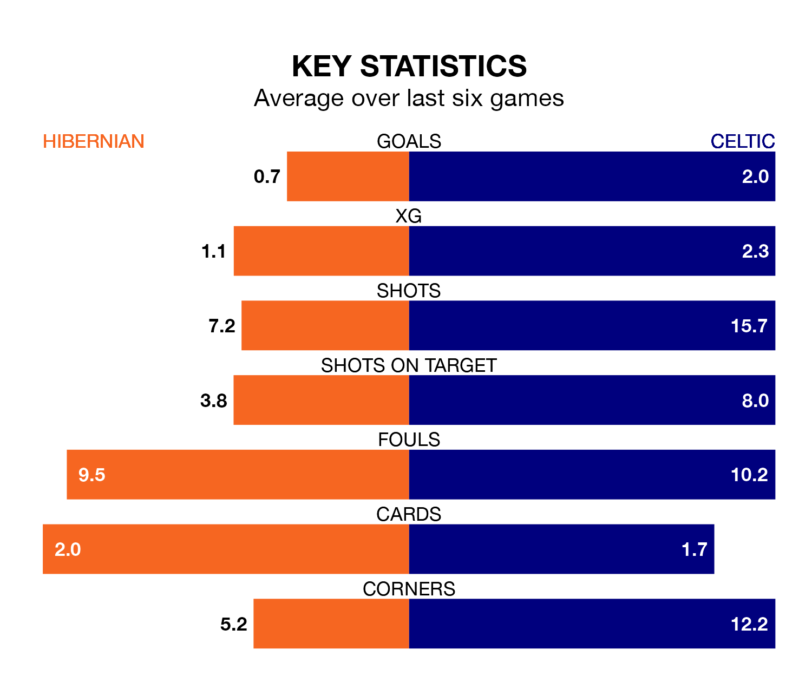

Celtic are strong favourites to take all three points despite Hibernian's home advantage in Wednesday's late match at the Easter Road Stadium.
*Betting Company* are offering odds of 1.28 on Celtic sealing the win, with the visitors sitting first in Premiership table.
Hibernian, who are seventh in the league and 32 points behind the Bhoys, are priced at 7.54 to win. A draw is set at 5.03.
With 55 goals in 24 games so far this season, Celtic are the league's highest scorers with 2.3 goals per game. And they are conceding fewer than average, letting in 16 goals at a rate of 0.7 per game.
Hibernian, meanwhile, are below average scorers, with 1.2 goals per game, compared to a league average of 1.3. They have conceded 1.6 goals per game.
Hibs are in terrible form in Premiership, with no wins and two draws from their last six games.
With five wins and a draw over that period, the Bhoys's form is much better – they have taken 16 points from 18, compared to the home team's two.
In Joe Hart, the visitors can rely on one of the league's safest pair of hands. He has kept 11 clean sheets in his 23 appearances this season, and only one other 'keeper – Rangers's Jack Butland – has been able to prevent the opposition scoring on more occasions in Premiership.
In Hibernian's net, David Marshall has seven clean sheets in 22 games. He has conceded a goal every 62 minutes, more than twice as often as the 154 minutes between goals for Hart.
In the last 10 years, Hibernian and Celtic have played each other on 26 occasions. Hibernian won three of them, Celtic 14, and they drew nine times.
On average, Hibs scored 1.0 goals and the Bhoys 2.2 in those matches.
Their last meeting was on December 6, when Celtic won 4-1 at home.
Hibernian's last match was on Saturday, a 3-0 loss against St. Mirren.
Celtic drew 1-1 with Aberdeen last time out, also on Saturday, with Nikolas-Gerrit Kühn on the scoresheet.
Wednesday's match will be refereed by Nick Walsh, who has taken charge of 12 Premiership games so far this season, issuing two red cards and booking 59 players. He has awarded five penalties.
The last Celtic game Walsh refereed was the 2-1 win at home against Rangers on December 30. He is yet to oversee a match featuring Hibernian this season.
Updated: 13:52 (UTC), 05/02/24